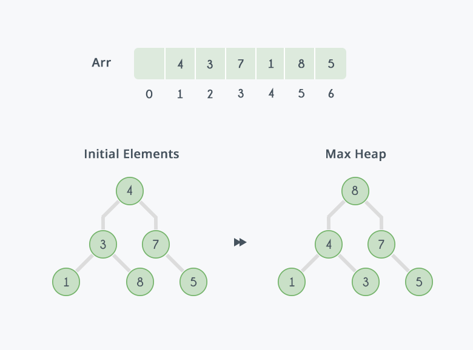
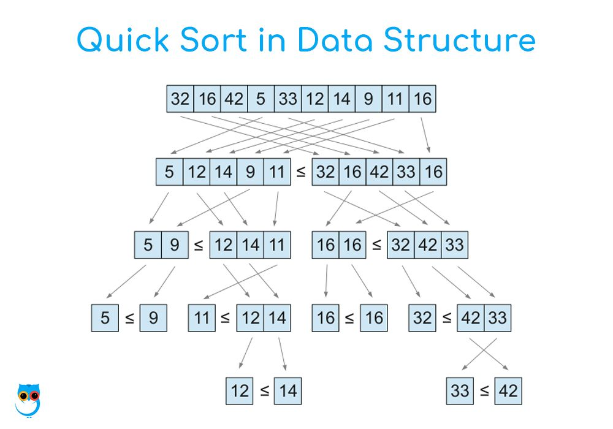

Jacob's Data Structures
Here is a link to the homepage.
This is a description of my personal DSA library for the C programming language.
Data Structures
Dynamic Arrays
Dynamic arrays are arrays that automatically resize themselves when needed. mine are created via macros, defined in the darray.h header file, that way they can be used to create dynamic arrays of any type, including user defined structs. These arrays automatically resize themselves to 2x their current size whenever the user attempts to add something to it beyond it's capacity. It supports insertion and removal anywhere in the array.
Intrusive Linked Lists
My intrusive linked lists are doubly linked. Instead of holding void* to your stored data inside of the nodes, these instrusive nodes are meant to be embedded into your structs. If you have a pointer to the node, you can then find it's container using the container_of macro, defined in utils.h. This cuts down on pointer chasing and cache misses.
Algorithms
Here is an analysis of the time complexity of the algorithms I have implemented.
| Algorithm |
Best Case |
Average Case |
Worst Case |
| Insertion Sort |
O(n) |
O(n^2) |
O(n^2) |
| Heap Sort |
O(nlog(n)) |
O(nlog(n)) |
O(nlog(n)) |
| Quick Sort |
O(nlog(n)) |
O(nlog(n)) |
O(n^2) |
Insertion Sort
Insertion sort is best used on arrays with small sizes. Insertion sorts from left to right. Each element is then compared to each element before it. If the element is less than the element before, the element before is moved over right by 1, then the next element is checked in this way.
Heap Sort

Heap sort is best used when you need a guaranteed nlog(n) sort in the worst case. It involves turning the array into a heap, a data structure in which each node of a binary tree has a value greater than it's two children. This is possible without breaking the structure of the array. Then, the topmost element is put to the back of the list, the array (minus the back, already sorted elements) is then modified to become a heap again, and the process continues.
Quick Sort

Quick sort is the fastest sorting algorithm for most cases. It involves picking a random pivot, moving everything that is more than that pivot to it's right, and everything that's less than the pivot to it's left, then recursively doing the same on both sides.